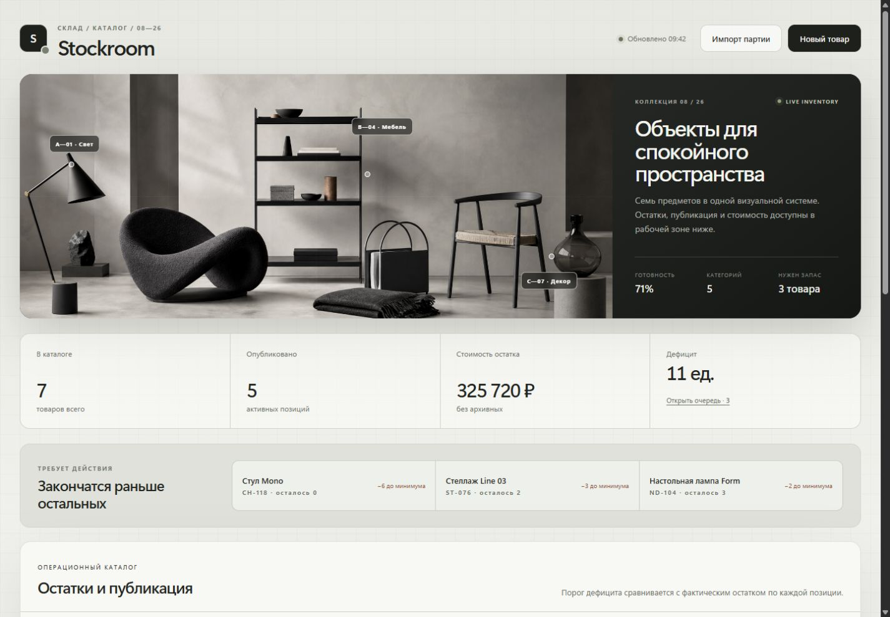
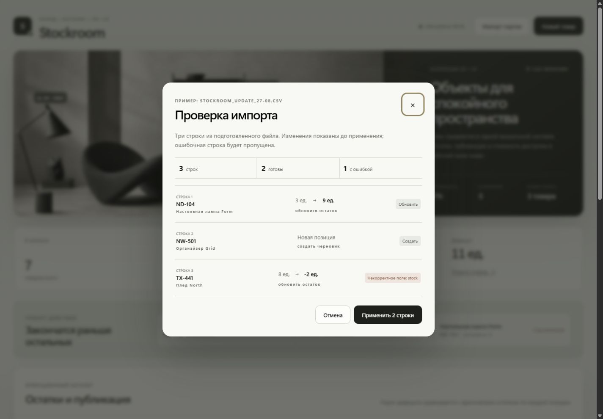
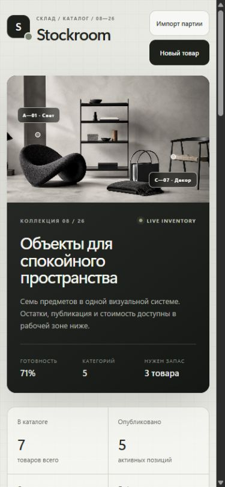
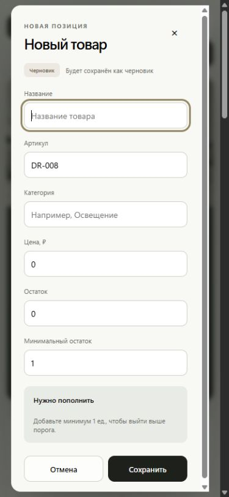

INVENTORY CONTROL · ADMIN UI
Дефицит
виден заранее.
Каталог, который показывает проблему до того, как товар закончится.
- Роль
- Product / UX / Frontend
- Формат
- Adaptive web app
- Проверка
- 8 domain tests

01Дефицит до нуля
02Полный lifecycle
03Импорт до → после
04Отмена партии
01 / ЗАДАЧА
Не ещё одна таблица.
Рабочая очередь.
Оператору важно не пересчитывать строки, а сразу видеть, что требует действия. Поэтому дефицит вынесен выше каталога и отсортирован по величине.
02 / ЛОГИКА
Один товар.
Четыре состояния.
- 01Черновик
Можно спокойно подготовить карточку.
- 02Активен
Позиция участвует в рабочих расчётах.
- 03Архив
Товар скрыт, но данные сохранены.
- 04Восстановлен
Возвращается без повторного ввода.
03 / БЕЗОПАСНЫЙ ИМПОРТ
Сначала увидеть.
Потом применить.
Каждая строка получает понятный результат: обновить, создать или пропустить. Для обновления показывается состояние «до → после», а всю партию можно отменить.

04 / МОБИЛЬНЫЙ СЦЕНАРИЙ
Та же работа.
Меньше шума.
На телефоне вторичные поля уходят из первого слоя. Сводка, дефицит и основные статусы остаются читаемыми, а длинная форма прокручивается внутри окна.


05 / РЕЗУЛЬТАТ
Спокойный интерфейс
для рискованных действий.
Рабочий frontend-продукт: финансовая сводка, очередь дефицита, поиск, фильтры, карточка товара, массовые операции, журнал и обратимый импорт.
- 8автотестов
- 5фильтров
- 4состояния товара
- 320px без переполнения